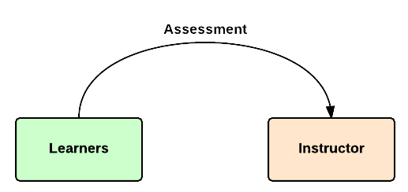
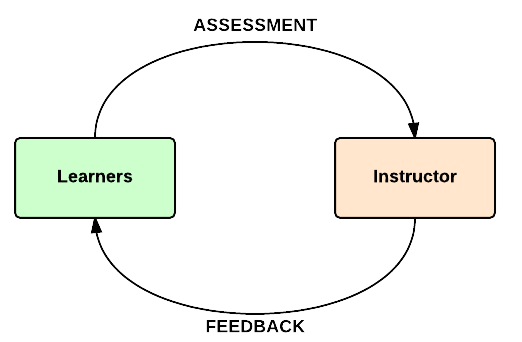
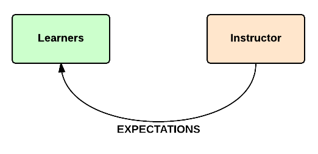
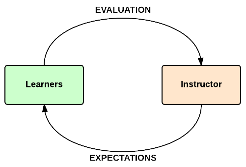

An ABC for Effective Flipped Learning
Robert Talbert, Grand Valley State University
27 May 2015
What is flipped learning?
Flipped learning is a pedagogical approach in which direct instruction moves from the group learning space to the individual learning space, and the resulting group space is transformed into a dynamic, interactive learning environment where the educator guides students as they apply concepts and engage creatively in the subject matter.
What's different

BUILD
For class on Wednesday:

Think/pair/share: What's good? What could go wrong and why?
Self-Regulating Learners

Steps to self-regulation:
Setting clear expectations
Giving student choices
Giving clear, action-oriented learning objectives
Providing rich set of resources and tools
Making learning iterative and feedback-based
Guided Practice
ASSESS
"Assessment"
COMMUNICATE
Communication
Communication
Communication
Communication

Thank you
Robert Talbert, Associate Professor of Mathematics
Grand Valley State University, Allendale, Michigan USA
Presentation: rtalbert.org/pearsontoronto
Links to images
- Letters A, B, and C: https://www.flickr.com/photos/takomabibelot/
- Rocking chairs: https://www.flickr.com/photos/ktylerconk/